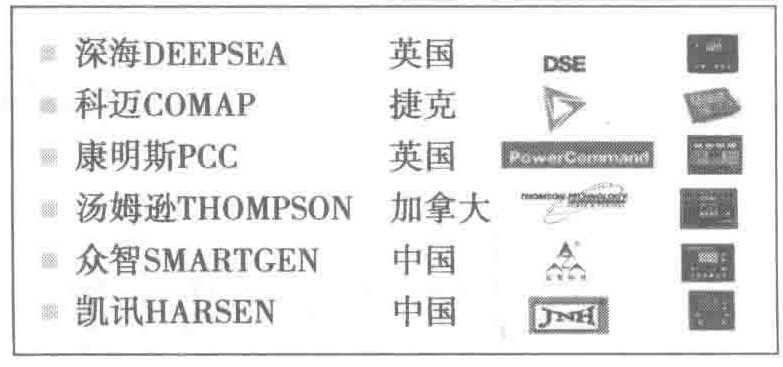
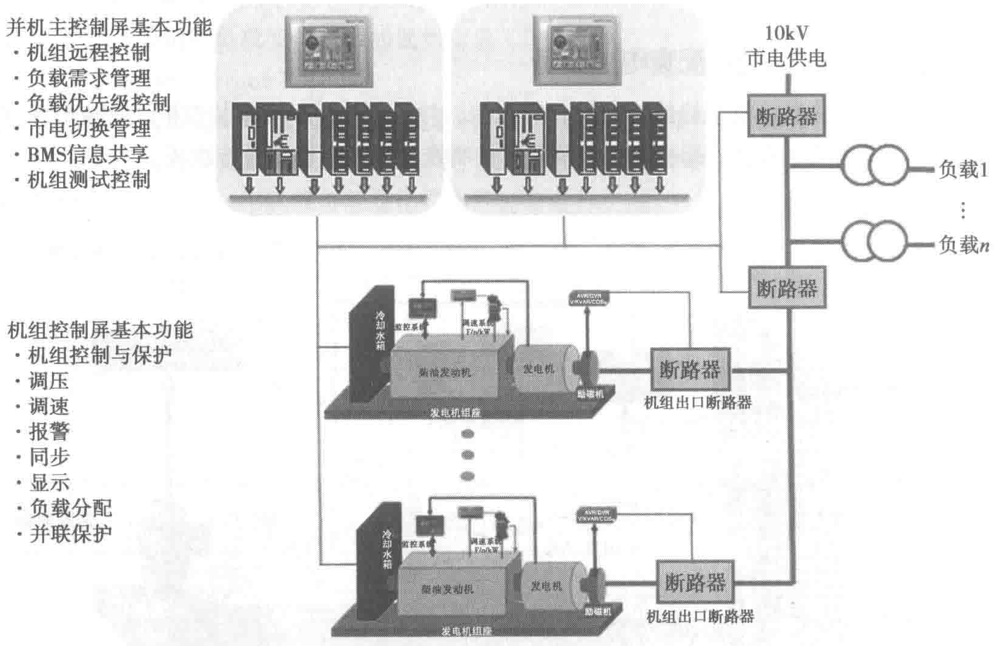

电系统等组成。柴油发动机利用柴油为燃料，将化学能转换为旋转的机械能；再由发电机将此机械能转换为电能输出。调速系统通过调节供油量的大小实现对发动机转速（即输出电源的频率）的调节，在固定频率下对输出有功功率进行调节。
（2）发电机
发电机主要由定子、转子、励磁系统、控制系统组成。励磁调压系统是通过对励磁电流的调节来实现对发电机电压的调节（并网发电机可调节无功功率及功率因数）。
（3）控制器

控制器可控制发电机组的就地/遥控启停机，对发电机的运行参数进行显示、记录和安全监控，确保发电机安全运行，同时具有自动同期、远程数据传输和遥控功能，以及机组在并网运行时运行逻辑的设定功能。目前常用的发电机组控制器如图5-2所示。
柴油发电机组控制示意图如图5-3所示。

2. 柴油发电机组的分类
- 按柴油发电机组的电压可以分为（10kV）中压油机和（0.4kV）低压油机。
- 按柴油发电机组的冷却方式可分为水冷和风冷机组。